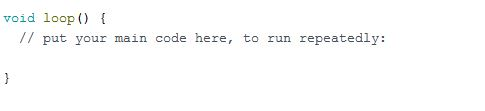

Void loop () և void setup () ֆունկցիաները Aduino IDE-ում հանդիպում է յուրաքանչյուր ոք, ով սկսում է ծանոթանալ Arduino միկրոկոնտրոլերի ծրագրավորման լեզվին: Եկեք վերլուծենք, թե ինչու են այս գործառույթները անհրաժեշտ սկետչում, ի՞նչ պետք է տեղադրվի ցիկլերի ներսում: Այս կանոնները վերաբերում են բոլոր տպասալերին՝ Arduino UNO-ից սկսած մինչև Arduino MEGA:
Այս ցիկլերը պետք է լինեն յուրաքանչյուր սկետչում և կանչվեն միայն
մեկ անգամ, նույնիսկ եթե ցիկլերից մեկը չի օգտագործվում: Բանն այն է,
որ երբ գործարկում եք Arduino միկրոկոնտրոլերը, սկսում է աշխատել ներկառուցված
միկրոծրագրերը, որոնք առաջին հերթին ստուգում են, արդյոք համակարգչից նոր ծրագրի ներբեռնումը
չի սկսվել։ Եթե օգտագործողը չի սկսել որոնում, ապա կոնտրոլերը սկսում է կատարել
նախկինում բեռնված սկետչը:
Երկու ցիկլերն էլ կանչվում են main.cpp ֆայլի main() ներկառուցված ֆունկցիայի միջոցով:
Այս դեպքում void setup () ֆունկցիան կանչվում է մեկ անգամ, իսկ void loop ()՝
for ցիկլում կանչվում է բազմաթիվ անգամներ։ Եթե սկետչը պարունակում է մեկից ավելի
void setup() կամ void loop() ֆունկցիաներ, ապա Aduino IDE-ի կոմպիլյացիայի
ժամանակ կառաջացնի սխալ՝ redefinition of ‘void setup()‘
կամ redefinition of ‘void loop()’:
Aduino IDE-ում setup ֆունկցիաննկցիան ունի հետևյալ կառուցվածքը.
void setup(){
}
Ձևավոր փակագծերը ({}) ցույց են տալիս ցիկլի սկիզբն ու ավարտը, այդ պատճառով հրամանները պետք է գրվեն
դրանց միջև: Եթե պատահաբար հեռացնեք կամ ավելացնեք լրացուցիչ
փակագծերը, ապա սկետչը բեռնելիս սխալ կառաջանա:
Void setup-ը կանչվում է մեկ անգամ և այն օգտագործվում է
պիների ռեժիմը կամ հրամանները սահմանելու համար, որոնք պետք է
կատարվեն միայն ծրագրի բեռնման պահին:
Setup ցիկլը կատարելուց հետո ծրագիրը մտնում է loop ֆունկցիայի մեջ,
որը կկրկնվի այնքան ժամանակ, քանի դեռ տպասալը հոսանքը է ստանում:
Եթե ցիկլը մեկ հրահանգ է պարունակում, ապա այն կկատարվի վայրկյանում
հազարավոր անգամ: Եթե որոշել եք Արդուինոյի վրա լուսադիոդը թարթելու սկետչ
գրել, ապա կոդի վրա պետք է delay ավելացնել,
հակառակ դեպքում LED-ի թարթումը նկատելի չի լինի։
Aduino IDE-ում հանգույց ֆունկցիան ունի հետևյալ կառուցվածքը.

Այսպիսով, եթե անհրաժեշտ է մեկ
անգամ միացնել LED-ը Arduino Nano միկրոկոնտրոլերի
վրա, ապա ավելի լավ է հրամանը գրել void setup () ցիկլում:
Եթե ծրագիրը պետք է անընդհատ ինչ-որ գործողություն կատարի, օրինակ՝ HC-SR04
ուլտրաձայնային տիրույթի որոնիչից տվյալներ ստանալու համար, ապա հրամանը
պետք է տեղադրվի void loop () հանգույցում: